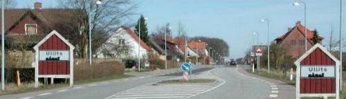

 |
digit@le Ullits |
Vi vil gerne invitere dig til et aftensmøde, hvor vi fortæller om de
initiativer, der er gennemført og om nogle nye tilbud.Kom og vær med - der er kaffe på kanden og kage til.
Programmet har vi sammensat således:
· Status og beretning om Det Digitale Ullits v/styregruppens medlemmer · Opstart af Ungdoms Netcafé - med 3 unge (men vil gerne have flere unge og forældre) · Info og tilmelding til basiskursus i Internet, tekstbehandling m.m. v/VUC i Aars -kurser afvikles i Ullits Digitale-værksted på skolen. · Pause, hvor du kan prøve vores computere. · Stiftende generalforsamling i "Foreningen Det Digitale Ullits" · Evt.
I 1999 fødes idéen til det, der kom til at hedde Det Digitale Ullits. I projektperioden i årene 2000-2003 blev der valgt en lokale styregruppe med Preben Bjerre (undervisning og uddannelse), David Douglas (support), Klaus Kjærgaard (Ullits Digitale-værksted), Jens Kr. Knudsen (foreninger-erhverv), Bent Nedergaard (web-master på www.ullits.dk) og Bjarne Nielsen (lokal tovholder)
Gruppens opgave, sammen med borgere i de forskellige grupper, var at realisere idéer og starte initiativer. Som du vil høre denne aften, er der mange positive resultater.
Projektperioden slutter den 31.12.03, hvor styregruppen også afslutter sit arbejde. Men Det Digitale Ullits slutter ikke her - der er stiftende generalforsamling, hvor der vælges bestyrelse iflg. vedtægterne, som du også finder på bagsiden af den omdelte information.